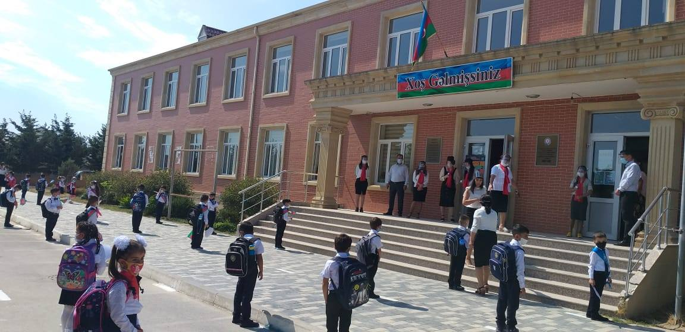

Əlavə Məlumat
Xankendi 4 Nömreli məktəb - Nizami Gəncəvi adına Xankəndi şəhər 4 nömrəli tam orta məktəb Bakı şəhəri, Sabunçu rayonunun Ramana qəsəbəsində Nizami Gəncəvi adına Xankəndi şəhər 4 nömrəli tam orta məktəbi istifadəyə verilib. Qaçqın və Məcburi Köçkünlərin İşləri üzrə Dövlət Komitəsinin mətbuat xidmətindən APA-ya verilən məlumata görə, 300 şagird yerlik məktəb binası Məcburi Köçkünlərin Sosial İnkişaf Fondunun sifarişi ilə inşa olunub. Məktəbin tikintisi bu ilin sentyabrında başa çatdırılıb. Yüksək şəraiti ilə seçilən, müasir təlim avadanlığı ilə diqqət çəkən bu təhsil ocağında təlim-tədris üçün hər cür şərait yaradılıb. Bütövlükdə 1 hektar sahədə inşa edilmiş 300 şagird yerlik məktəb binasında sinif otaqları ilə yanaşı idman zalı, akt zalı, laboratoriyalar, fənn kabinələri, kompüter otağı və yeməkxana da yaradılıb. Xatırladaq ki, Nizami Gəncəvi adına Xankəndi şəhər 4 nömrəli tam orta məktəbi böyük tarixə malikdir və 1945-ci ildən Azərbaycan məktəbi kimi fəaliyyət göstərib. Məktəbin gələcəkdə də səmərəli fəaliyyətinin təmin edilməsinin zəruriliyini nəzərə alaraq Xankəndi sakinlərinin böyük bir qisminin müvəqqəti məskunlaşdığı Bakı şəhərinin Sabunçu rayonunun Ramana qəsəbəsində Nizami Gəncəvi adına Xankəndi şəhər 4 nömrəli tam orta məktəbi üçün 300 şagird yerlik yeni binanın tikintisi məqsədi ilə Azərbaycan Respublikası Prezidenti tərəfindən 2012-ci il 30 dekabr tarixdə Sərəncam imzalanıb. Qeyd edək ki, 2003-2013-cü illər ərzində Dövlət Neft Fondundan və digər mənbələrdən ayrılmış vəsait hesabına 37,0 min ailə və ya 166 min nəfərdən çox məcburi köçkün üçün 2,2 milyon kvadrat metr sahəsi olan 61 qəsəbə və fərdi evlər inşa edilib, 120 məktəb, 6 musiqi məktəbi, 33 uşaq bağçası, 37 tibb müəssisəsi, 34 klub- icma mərkəzi, 28 rabitə evi tikilmiş, 490,6 kilometr yol, 644,0 kilometr su, 1059,0 kilometr hava elektrik, 310,0 kilometr qaz, 75,5 kilometr kanalizasiya, 20 kilometr istilik xətləri çəkilmiş, 581 müxtəlif gücə malik olan elektrik transformatoru quraşdırılıb. Ümumiyyətlə, 2001-2013-cü illər ərzində Dövlət Neft Fondundan və digər mənbələrdən ayrılmış vəsait hesabına 2,5 milyon kvadrat metr sahəsi olan, bütün sosial-texniki infrastruktura malik 82 müasir qəsəbə salınıb, 40 min ailə 180 min nəfərədək qaçqın və məcburi köçkünün mənzil-məişət şəraiti yaxşılaşdırılıb. Yeni salınmış yaşayış məntəqələrində 139 məktəb, 6 musiqi məktəbi, 51 uşaq bağçası, 55 tibb məntəqəsi, 45 mədəniyyət mərkəzi, 2 olimpiya İdman kompleksi tikilib, 648 kilometr yol, 815 kilometr su, 1412 kilometr hava elektrik, 333 kilometr qaz xətti çəkilib, 715 ədəd müxtəlif gücə malik elektrik transformatoru quraşdırılıb. Son 10 ildə 380 min nəfər əmək qabiliyyətli məcburi köçkündən 161 min nəfəri büdcə təşkilatlarında və digər sahələrdə daimi işlə, 200 min nəfəri isə müvəqqəti işlə təmin olunub. 2013-cü ildə bir nəfər məcburi köçkünə xərclənən vəsaitin həcmi təxminən 1100 manat təşkil edib ki, bu da dünyanın digər münaqişə zonaları ilə müqayisədə ən yüksək göstərici olmaqla, 2003-cü il ilə müqayisədə 9 dəfə çoxdur. Bütün bu görülən işlərin nəticəsidir ki, məcburi köçkünlər arasında yoxsulluq həddi son 10 ildə 75 faizdən 15 faizədək azalıb.
Yenilənmələr
Veb-Sayt Tez-Tez yenilənəcək, Veb-Saytda olan problemlər haqqında ətraflı məlumat yazıb mənim
Elektron Poçtuma göndərə bilərsiniz!
Şəkil

Müəllif hüququ (c) 2022 - 2023 Said Rustam, Vətəndaş. BÜTÜN HÜQUQLARI QORUNUR.
Azərbaycan Respublikasının Əmək və Əhalinin Sosial Müdafiəsi Nazirliyi (c) 1992 - 2023 BÜTÜN HÜQUQLAR QORUNUR.